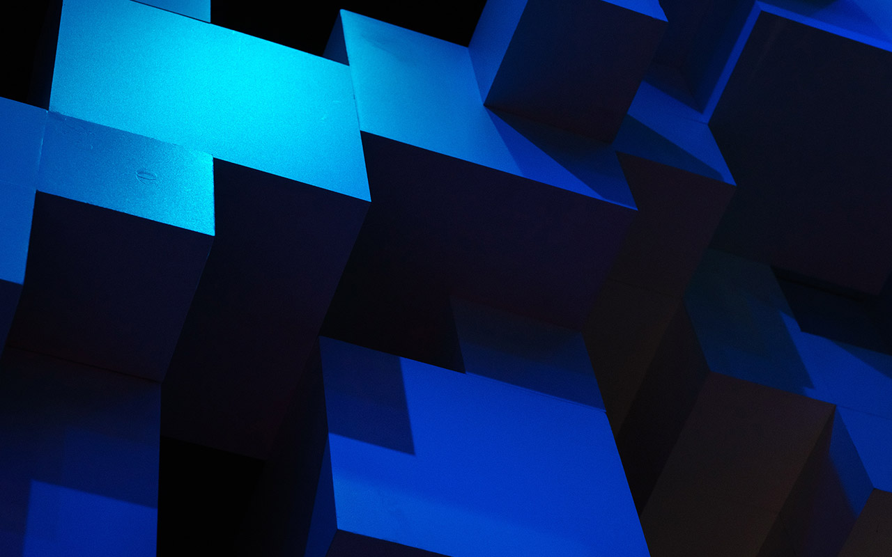

Passionné par la conception de systèmes bas-niveau, la théorie des compilateurs, l'éco-conception logicielle et le déploiement d'architectures hybrides et cloud performantes.
« Concevoir des logiciels robustes et efficients : de l'analyse lexicale d'un compilateur en C jusqu'aux architectures logicielles complètes en production, avec un engagement constant pour la rigueur algorithmique et la performance. »
Malik Bouaissi
Élève-Ingénieur en 2ème année • EFREI Paris
Actuellement en 2ème année à l'EFREI Paris (Promotion 2029), je concentre mes travaux sur la programmation système en C, l'architecture logicielle modulaire et l'optimisation des ressources informatiques.
Qu'il s'agisse d'écrire une toolchain de compilation complète (analyse lexicale, syntaxique, AST et vérification mémoire avec Valgrind), de développer un moteur de jeu 2D éco-conçu monitoré avec CodeCarbon (-34% CO2e), ou de déployer la suite de gestion locative BayBay v4.0 exploitée en production, je privilégie toujours la clarté architecturale et la robustesse du code.
Suite logicielle complète d'automatisation immobilière combinant une application de bureau Windows (Electron.js + Python standalone) et une plateforme cloud SaaS hébergée sur serveur dédié.
Vérification instantanée des quittances par QR Code en ligne.
Par Mohammed Belfar & Malik Bouaissi
Développement d'une chaîne de compilation complète pour un sous-ensemble du langage C.

Par Mohammed Belfar, Malik Bouaissi, Antoine Picou & Mathis Jacques--Llorens
Jeu vidéo 2D en Python intégrant un moteur physique temps réel et une démarche poussée de réduction d'empreinte environnementale.
Simulation logicielle orientée objet modélisant des entités autonomes et leurs interactions dans un monde dynamique à événements déterministes.
Par Mohammed Belfar & Malik Bouaissi
Retrouvez l'ensemble de mes projets, commits, contributions open source et expérimentations logicielles sur mon profil GitHub.
@mlk0622
Une progression académique et technique articulée autour de projets d'envergure.
Cycle Ingénieur • Promotion 2029 (2ème année)
Approfondissement des fondamentaux de l'ingénierie logicielle : algorithmique avancée, structures de données, programmation système en C, architecture des processeurs, modélisation relationnelle et gestion de projets agiles en équipe.
Projet Systèmes avec Mohammed Belfar
Conception de bout en bout d'un compilateur en C : flux lexical, descente récursive, arbre AST, vérification des types et portées lexicales. Validation stricte avec Valgrind (0 fuite mémoire).
Projet d'Équipe avec M. Belfar, M. Jacques--Llorens & A. Picou
Création d'un jeu vidéo physique 60 FPS en Python avec instrumentation CodeCarbon (-34% CO2e), profiling des cycles CPU et création artistique 100% Pixel-Art manuel sans IA.
Application Desktop Windows & Plateforme SaaS Cloud
Développement et packaging d'une solution de gestion locative immobilière : génération ALUR, signature SHA-256, automatisation SMTP, configuration serveur dédié Linux Nginx et reverse proxy.
Conception d'architectures proches du matériel, gestion manuelle de la mémoire et compilation.
Développement d'APIs, manipulation de données relationnelles et architectures événementielles.
Applications de bureau multiplateformes, interfaces soignées et déploiement d'infrastructures.
Optimisation des cycles de calcul, audit de consommation énergétique et travail collaboratif.
Curieux d'en savoir plus sur mes travaux ?
Découvrez le code source complet de mes projets sur GitHub ou testez directement la suite BayBay v4.0.
Étudiant ingénieur disponible pour des opportunités de stage, des échanges techniques ou des collaborations sur des projets ambitieux.